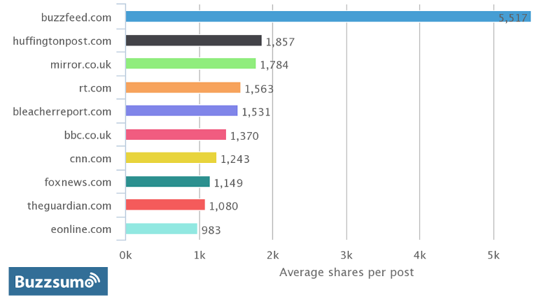
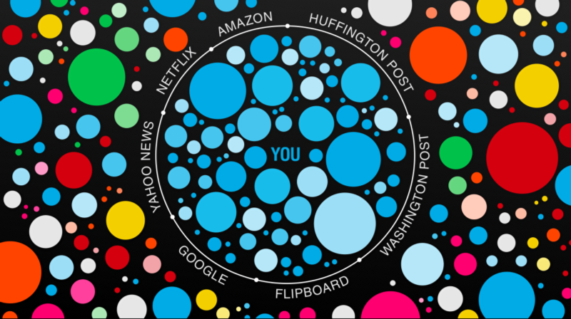
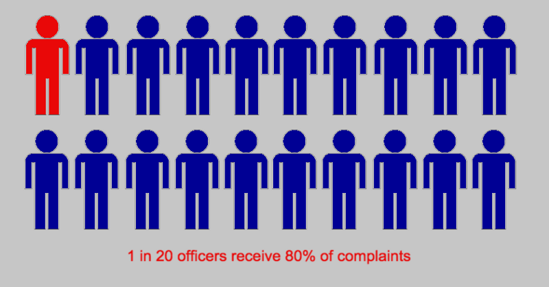

The 3 Surprising Ways People Influence Your Decisions
And Simple Solutions to Stop It
February 16, 2016
You probably feel pretty confident about your understanding of the world. From the products you buy, to the people you vote for, to the ideas you stand behind, you base your behavior on sound logic and balanced thinking.
At least that's what you'd like to believe. We all want to think we can see things objectively. We want to think we make our own decisions without the influence of others. But that's easier said than done. We're not machines: we're flawed, we're emotional, and we have limited time and attention to process the world around us.
So our brains create shortcuts. These shortcuts control what we pay attention to, the information we seek out, and our entire concept of how the world works. And the people who understand these shortcuts can gain a significant advantage in their ability to influence those who don't. This isn't a bad thing by itself, but not everyone's intentions are in your best interest. Either way, you have ways to protect yourself, such as learning how these shortcuts work, and by practicing mindful thinking. Today I'll focus on three main issues we face: emotions, filters, and intuition.
1. Sex Doesn't Sell. Emotion Does.
As any teenage boy can tell you, sex and violence capture our attention. You don't need an advertising degree to know “sex sells,” and be able to point out its usage in commercials. Contrary to the phrase though, studies show that sexual imagery and violence don't actually translate to more loyalty or sales. In fact, when a commercial has sexual imagery, people are less likely to remember what it's about. So what pulls us in?
In short, we seek out experiences that make us feel something. You can see this in the online world with companies like BuzzFeed. As the most shared website online, BuzzFeed gets more shares per article than any other major publisher (see graph below). A glance at their most viewed posts ever helps explain why: they all promise some kind of emotional reaction. Whether a laugh, tears, surprise, or anger, the links we share the most are the things that make us feel something.
As an experiment, even the title of this article promises to make you feel surprise by exposing you to some little truth nuggets you may not know about. The important rule about compelling titles though is that you actually have to deliver on the promise, so if you've gotten this far I might actually be doing my job.
2. Your Media Sources Help You Filter Out Opposing Views
In my most recent article, I briefly discussed how the mass media creates a filter effect that distorts how we understand the world. As an obvious example, look at Facebook. CEO Mark Zuckerberg wants Facebook to become your main curator of news, and provides you with a customized set of stories and articles based on your “Likes” and other online behavior. As Zuckerberg puts it, “a squirrel dying in front of your house may be more relevant to your interests right now than people dying in Africa.”
To say the least, that's a big statement. On one hand, it's awesome when your day-to-day information is exactly the type of stuff you care about. On the other hand (and as Eli Pariser illustrates brilliantly in his Ted Talk), the more we customize our information sources, the more we limit our view of the world.
In his talk, Pariser uses the terms “information vegetables” and “information dessert”: we prefer to see things that support what we already believe, because they require less mental effort and stress to consider. We'd rather see stories that give us an immediate payoff and personal validation than the things that challenge us and help us understand things on a deeper level. As much as we'd like to believe we keep a balanced perspective, we spend most of our time reading things we agree with. Before long, your newsfeed will fill up with nothing but posts you already agree with – especially if you don't pay attention to it happening.
Testing this idea, a study by Ohio State in 2009 showed people spend 36% more time reading an essay if it aligns with their opinions (I won't dive into it here, but this occurrence is known as “Confirmation Bias” and happens to everyone, stirring up all kinds of problems). [1]
In the same way a grocery store will fill an entire aisle with popular sugary cereals, the media focuses on stories to feed the hunger for easy information. Writers at the New York Times know their readers are mostly liberal, so they provide what readers want to hear about. Fox News knows how conservative their viewers are, and their stories reflect that. Facebook customizes our newsfeeds to give us what we want to click, so no one has the same newsfeed. When more consumers means more money, staying in business requires companies to give people whatever will keep them coming back.
Consider how much attention police brutality received in 2015. If your only exposure to police work is what you see on the news or viral videos online, you can easily start to think they're all racist, violent, and power hungry. According to a 2015 report on the New York Police Department, 14% of officers are responsible for 100% of total complaints. Of these complaints, 5% of officers on the force are responsible for 80% of them.
Numbers are hard, so I tried my hand at an infographic:
The scary thing about this cycle of self-imposed filters (and media response) is how it can dramatically change our idea of what other people think, regardless of what the public opinion actually is. When it seems like everyone else thinks a certain way, it's easy to wonder, what if they're actually right? This is where problems arise, and leads us to #3.
3. Publicity and Attention Trick Your Intuition
Whether or not you live in the U.S., odds are you've seen plenty of the 2016 presidential election coverage, and you know how much attention goes to Donald Trump. Between ABC, CBS and NBC, Trump took almost a third of all campaign coverage in 2015 (327 mins, or 32%). That's more than the entire Democratic contest combined. The second place GOP candidate was Jeb Bush with only 56 minutes. Among the Democratic party, Hillary Clinton received 121 minutes (mostly about her emails), and Bernie Sanders received a mere 21 minutes.[2]
How does Donald Trump (a man widely regarded by liberals and conservatives alike as a laughable candidate) seem to run the media so easily? Sure, he's great at creating small quotable sound bites for easy social media shares, but he reveals something else in his book, The Art of the Deal:
“One thing I've learned about the press is that they're always hungry for a good story, and the more sensational the better. It's in the nature of the job, and I understand that. The point is that if you are a little different, or a little outrageous, or if you do things that are bold or controversial, the press is going to write about you….
“I'm not saying that they necessarily like me. Sometimes they write positively, and sometimes they write negatively. But from a pure business point of view, the benefits of being written about have far outweighed the drawbacks…
And:
“…I play to people's fantasies. People may not always think big themselves, but they can still get very excited by those who do. That's why a little hyperbole never hurts”
He understands how to get a reaction, and (as discussed with #1) reactions mean publicity. Publicity may not win you an election, but the attention has real results in the polls (as we saw when he won the New Hampshire primary). Thanks to the Mere Exposure Effect, people grow on us as they become more familiar. That is to say, we unconsciously start to like people more as we see them more and get used to them. The simple act of being exposed to someone improves our opinion of that person. As viewers see Trump's face all over the news, they have an easier time warming up to him – and he knows it.
Our Lazy Brains Make It Worse:
Our brains are great at conserving energy and using shortcuts to understand the world in a fast and efficient manner. The problem is, “fast and efficient” doesn't always mean “logical and accurate.” Taking the time to analyze something and reason through it takes energy, so we save our mental capacity for the things that matter more to us. In these instances, we rely on our habits and intuition not just to make decisions, but to form basic opinions. One such example is known as the “Availability Heuristic.” When you analyze an idea or make a decision, you rely on the information that comes to mind most immediately. [3]
While dull and unexciting stories happen more often, we remember the dramatic and noteworthy events because they capture our imagination. They pull us out of our routine. They make us feel something. And if we can recall an event quickly, our brains register it as more commonplace.
As an example, think of some famous founders and CEOs you've heard of: Bill Gates of Microsoft, Steve Jobs of Apple, Richard Branson of Virgin, Mark Zuckerberg of Facebook, Evan Williams of Twitter (and Medium), or even Ralph Lauren. Some of the most well-known names in the business world, and not a single one of them graduated college. Intuitively, it sounds like skipping out on the college degree might not be a bad idea. In reality, those with college degrees are twice as likely to become millionaires, and half as likely to be unemployed.
Or consider advertisements. If a company bombards you with ads about their product, you might start to tune them out. But when it comes time to decide between the different brands that fit your budget, you'll often go with the brand you're most familiar with – especially if you don't know much about the products.
This is why you should pause before any important decision and take the time to learn about your choices. If you're voting in an election without understanding your options, you'll choose the candidate whose personality you most identify with, or whoever has the best reputation among your peers.
To further mess up our thinking, we remember recent events better. That means the latest news has more influence on our opinions. So when stories of Donald Trump fill your newsfeed and TV, your brain says “oh, this guy must be doing pretty well,” regardless of how much you like him. I'll expand on the influence of social norms and conformity in my next post.<
Recap (TL;DR)
This is a lot to process, but it boils down to three interconnected ideas:
- Emotions: emotional appeal grabs our attention. We seek out stories that make us feel something.
- Filters: modern media sources give audiences whatever sells, which is exciting and easy information that supports what we believe. When our favorite news sources give us stories that reinforce our opinions about the world, it makes us feel good. We keep coming back for it, even if it means blocking out the more important (but less exciting) data.
- Intuition: when we can remember something easily, we assume it happens more frequently, or that it's more important. Similarly, we like people (or objects) more as they become more familiar to us. People and events become more familiar when they are more memorable – that is, if publicity around them is noteworthy, emotionally charged, and relatively frequent or recent. We then imagine the world to be a certain way, based on the information that comes to mind most easily. When advertisements and news stories fill our attention with certain products, politicians, or ideas, we begin to see them as more credible, and hold them in higher regard than the things we don't hear about as often.
This creates a limited idea of reality, causing us to make stupid decisions and have false assumptions about groups of people. We make these assumptions, positive or negative, about anyone from police, CEOs, Muslims, politicians, the poor, the rich, drug users, athletes, or any other group. The stronger we feel, the more we shut out opposing views. Strong beliefs can be the biggest obstacle to learning.
Next Steps
The currents of society pull us in countless directions, whether through cultural biases, persuasive techniques, or implicit social pressures. We can't stop the ocean, but with mindful media consumption and informed decision making, we can choose where to swim. Here are two key assumptions you can make in order to keep yourself thinking reasonably:
- Assume you're wrong. This can be difficult, but extremely helpful. Humans may be smart, but our thinking is far from perfect: your opinions are often based on misunderstanding and misinformation, so your goal should then be to make yourself less wrong. Where did your opinion come from? Do you have real data to support it? Questioning yourself (and others) on a regular basis is the first step to making better decisions and lowering outside influence.
- Assume there's more to the story. Whatever story you hear, whether from a friend or a news source, remember you are only hearing it from one perspective. There are always more versions, and each one will be different. Don't let incomplete info control how you think about something (or someone). When you think you have a good idea who the heroes are, revert to #1.
Further Reading
- For more about the differences between fast and efficient (but not always accurate) intuition, compared with deliberate and logical (but energy consuming) thinking, I highly recommend Daniel Kahneman's book, Thinking, Fast and Slow.
- If you're interested in taking practical steps to improve your life through better thinking and better habits, James Clear is a phenomenal writer.
Sources
- [1] “Looking the other way: Selective exposure to attitude-consistent and counter-attitudinal political information.” Knobloch-Westerwick, S., & Meng, J. (2009, June).
- [2] Trump media attention: http://tyndallreport.com/
- [3] Availability Heuristic: http://study.com/academy/lesson/availability-heuristic-examples-definition-quiz.html